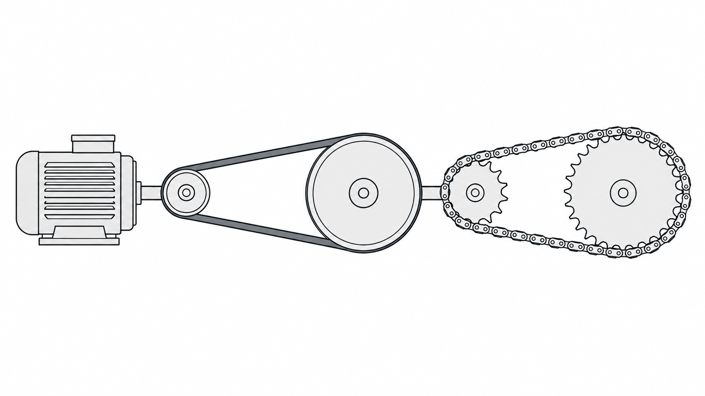

Transmisión Combinada

Herramienta para analizar una transmisión mecánica de doble etapa: primera etapa por polea-correa y segunda etapa por piñón-cadena.
Datos iniciales del sistema
1. Cálculo de la relación de velocidad
Fórmulas aplicadas
La relación total requerida indica la reducción total que necesita el sistema.
Se toma la relación total y se divide entre el valor ingresado para obtener la relación requerida en la etapa piñón-cadena.
Distribución de la reducción
Ejemplo:
Rv total = 14,58
Valor ingresado = 5
Rv piñón-cadena = 14,58 / 5 = 2,91
Resultados del paso 1
Ingrese las RPM del motor y la salida requerida.
Aquí se mostrará el resultado de dividir la relación total entre el valor ingresado.
Aquí se mostrará la velocidad después de la primera etapa.
Aquí se mostrará la velocidad final del sistema.
2. Configuración para etapa polea-correa
Factor de servicio
Seleccione tipo de máquina y horas de servicio.
Potencia de diseño para polea-correa
Datos para calculadora polea-correa
Estos valores serán la base para el diseño detallado en la calculadora de polea-correa.
3. Resultados detallados etapa polea-correa
4. Configuración para etapa piñón-cadena
Datos calculados para cadena
La entrada de cadena corresponde a la salida de la etapa polea-correa.
Factor de seguridad para cadena
Seleccione tipo de carga y fuente de potencia.
Selección de cadena
5. Resultados detallados etapa piñón-cadena
Factor de Seguridad:
-Seleccione tipo de carga y fuente de potencia.
Potencia de Diseño:
-Ingrese la potencia del motor.
Relación de Velocidad:
-Ingrese las RPM.
HP requerido por hilera:
-Ingrese los datos.
Selección de piñón conductor
Marque con check una de las opciones disponibles.
Dimensiones del piñón conductor
Al seleccionar una opción, aquí se mostrarán las dimensiones.
Piñón conducido
Primero seleccione una opción en la tabla.
Se redondea al número entero comercial más cercano.
Dimensiones del piñón conducido
Aquí se mostrarán las dimensiones del piñón conducido.
Distancia, longitud y eslabones
Aquí se mostrará la distancia mínima entre centros.
Aquí se calculará la longitud teórica de la cadena.
El número de eslabones se redondea al número par más cercano.